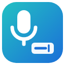

SpeakType has been removed
Its data was deleted from your browser.
Sorry it didn't work out. If you have 5 seconds, which of these comes closest? Each opens a short GitHub issue you can send or close.
- It didn't work on my file or page
- It's missing a feature I need
- It was confusing to use
- I found something better
- I only needed it once
- Something else
Removed it by mistake? Reinstall SpeakType
Other free, private extensions by the same developer
- ClearRec – Voice Recorder · Record your voice with no time limit. Crash-safe, private, and saves MP3 or WAV in one click.
- FocusRead – Fixation Reading · Read faster and stay on track: bold the start of every word on any web page, in place. Fast, private, works offline.
- FairFill – PDF Fill & Sign · Fill in and sign PDF forms for free. Save and print without a watermark or account. Your files never leave your computer.
- ConvertLocal – Private PDF Converter · Convert images to PDF, PDF to Word, images or text, and merge or split PDFs, all on your computer. No uploads, no email.
- DraftLens – DWG & DXF Viewer · Open DWG and DXF drawings in Chrome: pan, zoom, layers and measuring. Private: drawings never leave your computer.
- SuggestScope – Keyword Expander for Amazon Sellers · See every Amazon search suggestion before and after your keyword in 20 marketplaces. Export CSV, build backend search terms. No ads.